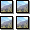

Exporters
Exporters Extensions
Extensions Interface
Interface Chowdren
Chowdren ClickStore
ClickStore Bug Tracker
Bug Tracker| |
This is an archive. |
| See the new ClickWiki at https://clickwiki.github.io. This version is just an archive for the purposes of migrating content to the new structure. |
Quick Backdrop
|  | |
| Author | |
| Status | Released |
| Release Date | Unknown |
| Available for | Not yet documented |
| Supported Runtimes | |
| License | Free |
| Download | |
|---|---|
| Includes Examples | No |
| Includes Help Files | Yes |
| Links | Included by default. |
| Alternates | Active Backdrop |
{kind=link}
The Quick Backdrop objects provide the background for your Clickteam Fusion 2.5 applications. They can be lines, rectangles, or ellipses, and they can have different border and line colors. They can be filled with solid, gradient, and motif fills and can be used to build a complex collage of colors and patterns as the background for your applications. All quick backdrops are a standard size, however you can change the size by clicking the object and dragging the control box to a new size. If you've chosen Motif, the image will be tiled to fit the new size.
Quick Backdrop objects can be defined as obstacles in the Frame editor, which means that Active objects can collide with them and trigger various actions. As an obstacle, the Quick Backdrop object can also be used as platforms and ladders in different types of games.
There are no conditions, actions, or functions associated with the Quick Backdrop object.
Properties
Shape
Defines the shape of your Quick Backdrop object. Three choices are available:
- Line: draws a line. Use the resize handles to make a diagonal line.
- Rectangle: draws a rectangle. Use the resize handles to modify the shape.
- Ellipse: draws an ellipse. Use the resize handles to modify the shape.
Border / Color
Defines the color of the border of the object. Click to open a color selector.
Border / Width
Defines the thickness of the border, that is the number of pixels of the border.
Fill / Type
Defines how the object is filled. Four settings are available:
- None: the interior of the object is empty. Handy to just draw the border of the object.
- Solid color: the area is filled with a plain color. If this option is selected, a new property appears:
- Color: defines the color to use to fill the object. Click to open a color selector.
- Gradient: the area is filled with a gradient, from a first color to a second color. If this option is selected, three new properties become available:
- Color: the origin color of the gradient.
- Color 2 (gradient): the destination color of the gradient.
- Vertical gradient: check this option to make the gradient vertical.
- Motif: the area is filled by repeating a small bitmap over and over. This option is very handy to make big backgrounds and can save memory. If you select this property, two new ones become available:
- Motif / Edit: click on the edit button to open a picture editor and edit the motif displayed in the object.
- Integral height: resizes the object to match a multiple of the height and width of the motif. This means that the motif will not be truncated by the borders